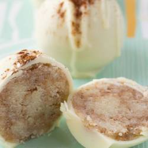

Home
Recipes
About
Appetizers
Pomegranate Arancini with Goat Cheese Fonduta
Italian Cheese Bread
Butternut Squash, Cranberry, and Goat Cheese Crostini
Fried Rosemary Mozzarella Balls
Entrees
Southern Pot Roast
Honey Glazed Ham
Roasted Whole Duck
Roast Turkey with Bacon
Pork Tenderloin with Cranberry-Orange Sauce
Crockpot Oyster Stew
Desserts

Snickerdoodle Cookie Dough Truffles
Red and White Chocolate Bark
Red Velvet Cupcakes
Sticky Toffee Pudding
M&M Oreo Holiday Bars